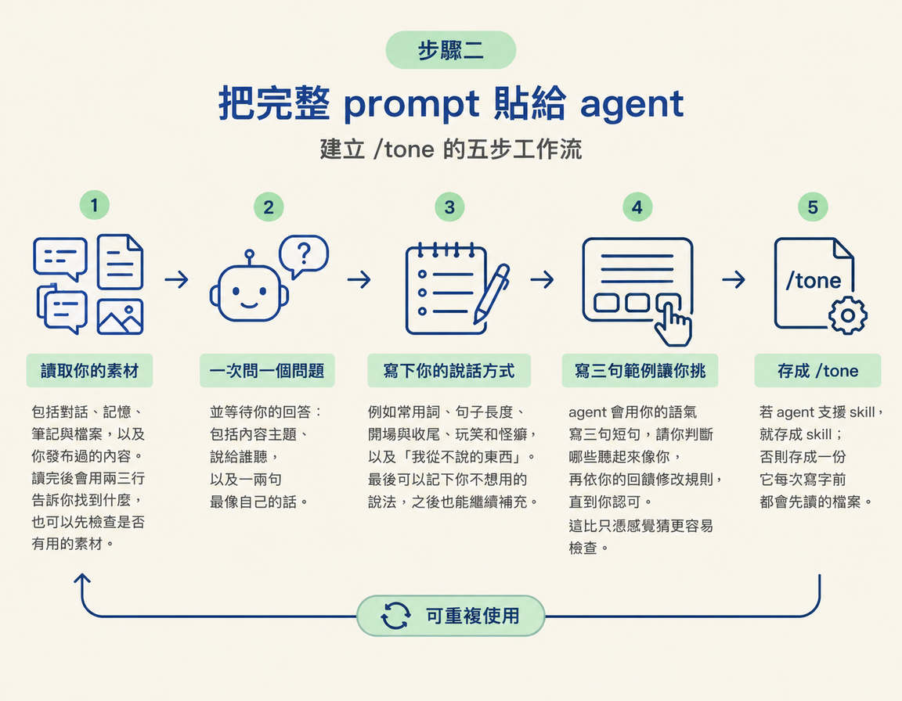
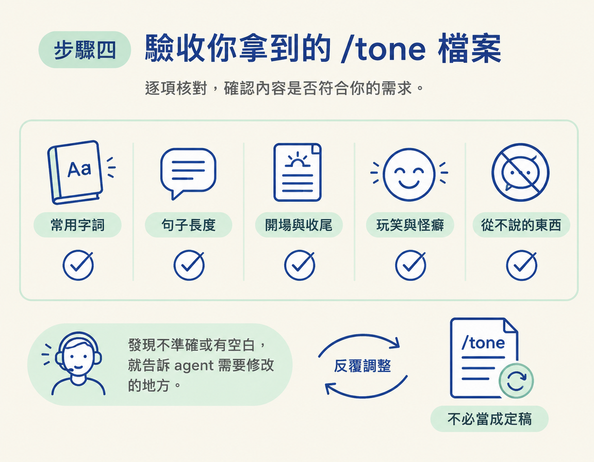

這一步要把你平常和 agent 對話時展現的語氣，整理成一份可重複使用的 /tone。你會用一段指令，或讓 agent 訪談你，記下你的用詞、句長、開場與收尾習慣、玩笑怪癖，以及「從不說的東西」。做完後，agent 寫內容時就能先讀這份檔案，再動筆。
上一節你認識了 AI slop，也知道解法之一是準備一份記住你聲音的檔案。這一節就從那個想法往前走，把 /tone 做出來。
你需要的素材，可能已經存在你和 agent 的對話裡，如果你們還不熟，也可以由 agent 訪談你來補足。最後產出的 /tone 會整理你的常用字、句子長短、開場與收尾方式、玩笑和怪癖，還有一組「我從不這樣講」的清單。
/tone 存成 skill。如果不支援，就存成一份每次寫字前都會先讀的檔案，兩種做法都可以。這一步不用額外花錢，也不用安裝外部工具，準備好一段對話就能開始。
講師把做法濃縮成一句話。先看懂這句，就能抓住指令的核心：不是叫 AI 憑空發明一種語氣，而是請它整理「根據它已經知道的你」所能找到的線索。
…based on everything that you know about me, create a tone of voice skill based on how I talk to you.
翻成中文是：「根據你對我所知道的一切，依我跟你講話的方式，建立一個語氣 skill。」關鍵在 everything that you know about me：agent 要整理的素材，首先就是你們過去的對話。
課程頁面提供了完整版 prompt，除了請 agent 整理已有素材，也安排它逐步訪談你。把整段貼給 agent：
"""Based on everything you know about me, create a tone of voice skill based on how I talk to you. 1. First, read what you already have of me: our chats, your memory of me, my notes and files, and anything I've posted. Tell me in 2 or 3 lines what you found. 2. Then ask me a few questions, one at a time, and wait for each answer: what I make content about, who it's for, and a line or two I've said or written that feels most like me. If we haven't talked much yet, interview me about how I normally speak instead, and build a first version we can refine as we go. 3. Write down how I sound: the words I use a lot, how long my sentences are, how I open and close, my jokes and quirks, and the things I never say. 4. Write 3 short sample lines in my voice and ask which ones sound like me. Fix the rules until I say yes. 5. Save it as a skill called /tone (or a file you read first, if you can't make skills), and use it every time you write anything for me."""
這段 prompt 把工作拆成幾步。照著 agent 的回覆往下走，就能知道它目前做到哪裡、接下來該確認什麼。
/tone：若 agent 支援 skill，就存成 skill，否則存成一份它每次寫字前都會先讀的檔案。
如果你和 agent 沒聊過幾次，它可能沒有足夠的對話素材。prompt 已經替這種情況留了退路：If we haven't talked much yet, interview me about how I normally speak instead，意思是「如果我們還不熟，就改為訪談我平常怎麼說話」。
因此，素材少不會讓流程卡住，只是你需要多回答幾個問題。講師建議先建立一個初版，再一邊使用、一邊修（a base skill and just refine that as you go）。第一次不必追求完美，先做出一份可以檢查、可以修改的檔案就好。
prompt 跑完後，打開 /tone 檢查內容。下面五項是確認成品能不能用的檢查表：
| 該有的欄位 | 你要檢查什麼 |
|---|---|
| 常用字詞 | 列出的字是不是你真的常講的，而不是誰都適用的通用詞 |
| 句子長度 | 有沒有說明你偏好長句或短句，以及說話節奏偏快或偏慢 |
| 開場與收尾 | 有沒有寫出你習慣怎麼起頭、怎麼結束 |
| 玩笑與怪癖 | 有沒有記下你專屬的口頭禪、比喻或愛用的梗 |
| 從不說的東西 | 有沒有開始累積一組你不會使用的說法，初版項目很少也正常 |
若有欄位空著或描述不準，直接告訴 agent 哪裡需要修改。這份檔案本來就可以反覆調整，不必把第一版當成定稿。

把完整 prompt 貼給 agent，讓它先讀已有素材，再一次問一個問題，整理你的用詞、句長、開場收尾、玩笑怪癖和「從不說的東西」，最後存成 /tone。如果你們還不熟，就讓它先訪談你，建立初版再逐步修改。完成後，逐項檢查五個欄位。有不準的地方，就請 agent 當場修正。
做完後，你手上會有一份能讓 agent 寫作時參照的 /tone。如果 agent 還沒有你的素材，或你想借一位欣賞的創作者的語氣來打底，下一步會帶你抓取 YouTube 逐字稿，作為風格靈感，而不是拿來照抄。